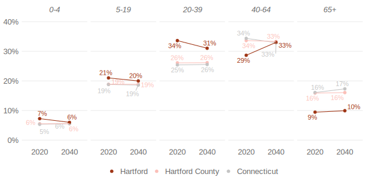

library(tidyverse)Use smart labeling in ggplot to help your audience understand your graphs
When making data viz in R, it’s easy to think that adding label to everything will make your charts easier to understand. This is rarely the case. Instead, when making charts, maps, etc with ggplot, your best bet is to label smartly. Only labeling the most important pieces of your data viz ensures that your audience will grasp what you want them to grasp. In this blog post, I’ll show you how to use smart labeling in ggplot to help your audience understand your graphs.
An example
The issue of smart labeling came up in our work with the Partnership for Strong Communities (PSC) and the Connecticut Data Collaborative (CTData) making housing data profiles for all towns and counties in Connecticut. One graph in the reports aims to show population projections for various age groups. Here, for example, is the chart we made for the city of Hartford.

Note how the only text we add to the graphs is that for the city of Hartford. While there are lines that show trends in Hartford County and Connecticut, we don’t try to label these. If we did, the result would be completely illegible:

How, then, do you decide what text to add and what to leave off? The answer comes down to a simple question that you should ask yourself before making any graph: what do you want the reader to take from the graph?
When working on the population projection plots for the Connecticut Housing Data Profiles, we wanted to highlight the city (the county and state were there for comparison). So, when adding text to this plot, we didn’t try to label everything; instead, we only labeled the values for Hartford.
How did we do this in ggplot? The answer is actually less about ggplot and more about getting our data in the right format using other tidyverse packages like {dplyr}. To show you what I mean, let’s look at the data. I’ll begin by loading the tidyverse.
Now, we can read in the data, saved as an RDS file.
population_projection <-
read_rds("population_projection.rds")Next, we can look at the data for Hartford:
population_projection |>
filter(location == "Hartford")
#> # A tibble: 10 × 5
#> location year age_group pct pct_formatted
#> <chr> <chr> <fct> <dbl> <chr>
#> 1 Hartford 2020 0-4 0.0725 7%
#> 2 Hartford 2020 5-19 0.210 21%
#> 3 Hartford 2020 20-39 0.336 34%
#> 4 Hartford 2020 40-64 0.287 29%
#> 5 Hartford 2020 65+ 0.0945 9%
#> 6 Hartford 2040 0-4 0.0600 6%
#> 7 Hartford 2040 5-19 0.200 20%
#> 8 Hartford 2040 20-39 0.310 31%
#> 9 Hartford 2040 40-64 0.330 33%
#> 10 Hartford 2040 65+ 0.0993 10%With this data loaded, we can make a function to create our population projection plot. This plot takes two arguments: town_to_plot and county_to_plot. From there, it filters the population_projection data to only include the town, county, and Connecticut. This data is then piped into ggplot, where we make a set of slope graphs (one for each age group) to show the population projections from 2020 to 2040. The function below, with explanatory comments throughout, shows how this all works.
population_projection_plot <- function(town_to_plot, county_to_plot) {
population_projection |>
# Filter the data to only include town, county, and Connecticut
filter(location %in% c(town_to_plot, county_to_plot, "Connecticut")) |>
# Make location a factor to ensure the town line shows up on top of the others
mutate(location = fct(
location,
levels = c("Connecticut", county_to_plot, town_to_plot)
)) |>
ggplot(aes(
x = year,
y = pct,
color = location,
group = location
)) +
# Add dot for each town/county/state in 2020 and 2040
geom_point(size = 2) +
# Add line connecting each town/county/state
geom_line(show.legend = FALSE) +
# Remote legend title
labs(color = NULL) +
# Make the chart faceted by age group
facet_wrap(
vars(age_group),
nrow = 1
) +
# Set the y limits to go from 0% to 40%
# Use percent formatting from the {scales} package
scale_y_continuous(
limits = c(0, 0.4),
labels = scales::percent_format(1)
) +
# Set the colors for town, county, and state
scale_color_manual(
values = c(
"#c4c4c4",
"#fbbfb8",
"#9f3515"
)
) +
# Reverse the legend order to put the town first
guides(color = guide_legend(reverse = TRUE)) +
# Use theme_minimal() and then make additional tweaks
theme_minimal() +
theme(
panel.grid.minor = element_blank(),
panel.grid.major.x = element_blank(),
legend.position = "bottom",
strip.text = element_text(
face = "italic",
size = 13,
color = "grey40"
),
legend.text = element_text(
size = 13,
color = "grey40"
),
axis.title = element_blank(),
axis.text = element_text(
size = 13,
color = "grey40"
)
)
}We can now use our function as follows:
population_projection_plot(
town_to_plot = "Hartford",
county_to_plot = "Hartford County"
)
As you can see, the function only adds points and lines. If we want to add labels, we’ll need to add another layer using geom_text(). We can use the pct_formatted variable for the text labels, as follows (the show.legend = FALSE ensures that no unnecessary text elements get added to the legend).
population_projection_plot(
town_to_plot = "Hartford",
county_to_plot = "Hartford County"
) +
geom_text(
aes(
label = pct_formatted
),
show.legend = FALSE
)This, however, gives us the less-than-ideal plot we saw before, with all of the labels overlapping each other:

One approach I’ve seen people use in this situation is the {ggrepel} package. This package, which automatically ensures that text labels don’t overlap can be quite helpful in certain situations. But in this situation, the result is still quite messy.
library(ggrepel)
population_projection_plot(
town_to_plot = "Hartford",
county_to_plot = "Hartford County"
) +
geom_text_repel(
aes(
label = pct_formatted
),
show.legend = FALSE
) 
The solution, then, is to only add text for Hartford, and not for Hartford County and Connecticut. To do this, I use geom_text(), but within this layer, I filter the data to only include Hartford.
population_projection_plot(
town_to_plot = "Hartford",
county_to_plot = "Hartford County"
) +
geom_text(
data = population_projection |> filter(location == "Hartford"),
nudge_y = 0.03,
aes(
label = pct_formatted
),
show.legend = FALSE
)Doing this gives me labels for Hartford, but not Hartford County and Connecticut. The result is much clearer.

When making plots in ggplot, it can be tempting to label everything. But this is rarely an ideal approach. You often end up with overlapping text. And, more importantly, too much text makes things less clear for your reader.
Instead, the best solution is to start by identifying what you want your reader to focus on. From there, you can add text to highlight that thing. In this example, I filtered data within geom_text() to only show text labels for the city we care about (in this case, Hartford). Doing this makes your data viz clear for your readers.